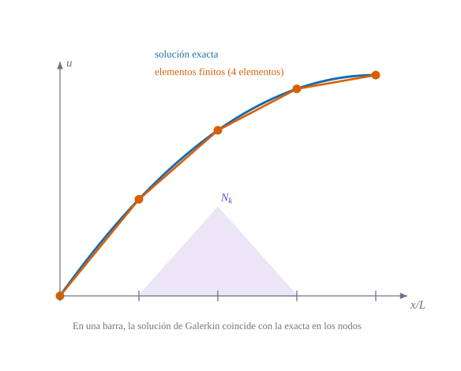

Forma débil, funciones de forma, ensamblaje y condiciones de contorno en la estructura más sencilla

Figura 22.1: Una barra cargada resuelta con cuatro elementos lineales: la poligonal naranja pasa exactamente por los nodos de la solución exacta (azul), y la función de forma \(N_k\) (violeta) vale 1 en su nodo y 0 en los demás. Cálculo analítico para esta carga; el mismo cálculo se repite en la práctica de Julia.
Cómo se convierte una ecuación diferencial en un sistema de ecuaciones algebraicas que un ordenador resuelve, y por qué basta «cortar» la estructura en trozos sencillos
Objetivos y prerrequisitos
Objetivos. Al terminar el tema sabrás:
pasar del problema diferencial de la barra a su forma débil;
construir las funciones de forma lineales y la matriz de rigidez de un elemento barra;
ensamblar varios elementos y aplicar las condiciones de contorno;
resolver una barra a mano con dos elementos y comprobarlo con un programa de ocho líneas;
decir qué significa «converge» y por qué en la barra el resultado es exacto en los nodos.
Prerrequisitos.Principios variacionales (energía potencial y trabajos virtuales). Álgebra lineal básica.
Secciones del tema
Sección 22.1 · De la forma fuerte a la débil · Sección 22.2 · Funciones de forma y elemento barra
carga axial repartida (fuerza por unidad de longitud)
\(N_k(x)\)
función de forma del nodo \(k\)
\(\mathbf{K},\ \mathbf{f},\ \mathbf{d}\)
matriz de rigidez, vector de cargas y vector de desplazamientos nodales
\(h\)
longitud de un elemento
NotaExplicación para ingenieros: el método en una frase
Cortar, dar rigidez a cada trozo y pegar. Un elemento de barra de longitud \(h\) se comporta exactamente como un muelle de rigidez \(k=EA/h\). Una barra partida en tres elementos es, por tanto, una cadena de tres muelles en serie: el alargamiento total es la suma de los tres alargamientos, y la fuerza que cruza cada nodo es la misma a ambos lados. Todo el aparato matemático de este tema es la forma ordenada de escribir esa idea para que se pueda programar.
22.1 De la forma fuerte a la forma débil
Intuición. La barra de la Figura 22.1 está empotrada en \(x=0\) y cargada a lo largo. Cada rebanada de longitud \(dx\) debe estar en equilibrio: la fuerza axial \(N=EA\,u'\) cambia a lo largo de la barra justo lo que valga la carga.
La forma fuerte es la ecuación diferencial con sus condiciones de contorno:
Exige que \(u\) tenga dos derivadas. La forma débil pide menos: se multiplica por una función de prueba \(v(x)\) (con \(v(0)=0\), el «desplazamiento virtual» de Sección 21.1) y se integra por partes:
Definición 22.1 (Forma débil de la barra) Hallar \(u\) con \(u(0)=0\) tal que, para toda \(v\) con \(v(0)=0\), \[
\int_0^L EA\,u'\,v'\,dx=\int_0^L b\,v\,dx+P\,v(L).
\tag{22.2}\]
El primer miembro es el trabajo virtual interno, el segundo el externo: es ecuación 21.1 del tema D8 escrita para una barra. Sólo aparecen primeras derivadas, de modo que sirven funciones continuas y lineales a trozos. La condición \(EA\,u'(L)=P\)no hay que imponerla: sale sola de ecuación 22.2 (se llama condición natural); en cambio \(u(0)=0\) sí se impone (condición esencial).
Multiplicando la ecuación por \(v\) e integrando, \(\int_0^L[(EAu')'+b]v\,dx=0\). Integrando por partes, \(\int_0^L(EAu')'v\,dx=[EAu'v]_0^L-\int_0^LEAu'v'\,dx\), y como \(v(0)=0\) el término de contorno vale \(EAu'(L)v(L)=Pv(L)\). Sustituyendo se obtiene ecuación 22.2. Recíprocamente, si ecuación 22.2 vale para toda \(v\), tomando primero \(v\) nula en el contorno se recupera la ecuación diferencial, y después \(v(L)\neq0\) da la condición natural. \(\blacksquare\)
22.2 Funciones de forma y el elemento barra
Se divide \([0,L]\) en \(n\) elementos de longitud \(h\) y se aproxima \(u\) por una función lineal a trozos, determinada por sus valores \(d_k=u(x_k)\) en los nodos:
La función de forma \(N_k\) es la «tienda de campaña» de la Figura 22.1: vale 1 en el nodo \(k\), 0 en los demás, y es lineal entre nodos. Dentro de un elemento con nodos \(i\) y \(i+1\), con coordenada local \(\xi=(x-x_i)/h\in[0,1]\):
Ejemplo 22.1 (Ejemplo resuelto: barra con carga uniforme y dos elementos) Barra de \(L=1000\) mm, \(EA=10^7\) N, empotrada en \(x=0\), con \(b=5\) N/mm y sin fuerza en el extremo. Dos elementos de \(h=500\) mm; nodos 1 (\(x=0\)), 2 (\(x=500\)) y 3 (\(x=1000\)).
Rigidez de cada elemento:\(EA/h=2\cdot10^4\) N/mm, luego \(\mathbf{K}_e=2\cdot10^4\begin{pmatrix}1&-1\\-1&1\end{pmatrix}\) para los dos.
Cargas:\(bh/2=1250\) N a cada nodo del elemento.
Ensamblaje. Cada nodo recibe las contribuciones de los elementos que lo comparten (el nodo 2 pertenece a los dos): \[
2\cdot10^4\begin{pmatrix}1&-1&0\\-1&2&-1\\0&-1&1\end{pmatrix}\begin{pmatrix}d_1\\d_2\\d_3\end{pmatrix}=\begin{pmatrix}1250\\2500\\1250\end{pmatrix}+\begin{pmatrix}R_1\\0\\0\end{pmatrix}
\]
Contorno.\(d_1=0\) (se elimina la primera fila y columna; \(R_1\) es la reacción, que ya no hace falta): \[
2\cdot10^4\begin{pmatrix}2&-1\\-1&1\end{pmatrix}\begin{pmatrix}d_2\\d_3\end{pmatrix}=\begin{pmatrix}2500\\1250\end{pmatrix}\ \Rightarrow\ d_2=0{,}1875\ \text{mm},\quad d_3=0{,}25\ \text{mm}.
\]
Comprobación. La solución exacta es \(u=b\,(Lx-x^2/2)/EA\): \(u(500)=0{,}1875\) mm y \(u(1000)=0{,}25\) mm. Coinciden en los nodos, aunque la exacta es una parábola y la aproximada, una poligonal. Es el resultado analítico de la Figura 22.1.
En el Ejemplo 22.1, ¿cuánto vale el desplazamiento del nodo central, \(d_2\)?
Resuelve el sistema \(2\times2\) de debajo del texto «Contorno», o evalúa la solución exacta \(u=b(Lx-x^2/2)/EA\) en \(x=500\) mm.
\(u(500)=5\,(1000\cdot500-500^2/2)/10^7=5\cdot375\,000/10^7=0{,}1875\) mm.
AdvertenciaDos puntos que suelen confundir
La matriz \(\mathbf{K}_e\) es singular (sus filas suman cero): un elemento suelto puede moverse como sólido rígido. Sólo tras imponer el contorno el sistema global tiene solución única.
«Eliminar» un g.d.l. no es poner \(K_{11}=0\). Se suprime su ecuación; la reacción \(R_1\) se recupera después multiplicando la fila suprimida por el vector de desplazamientos.
22.3 Ensamblaje y condiciones de contorno
Con \(n\) elementos hay \(n+1\) nodos y \(n+1\) incógnitas. El ensamblaje suma \(\mathbf{K}_e\) en las filas y columnas de los nodos que usa cada elemento (la conectividad):
donde \(\mathbf A_e\) es la matriz que selecciona los g.d.l. del elemento \(e\) dentro del vector global. En programación nunca se forma \(\mathbf A_e\): se recorre la lista de conectividad. En el tema E9 (pendiente; véase el mapa del libro) se verá esto con los 20 g.d.l. de un elemento de lámina.
NotaExplicación para ingenieros: ¿por qué «ensamblar» es sumar?
Imagina tres personas tirando de una cuerda unida a un anillo: la fuerza total sobre el anillo es la suma de lo que aporta cada cuerda. Igual en un nodo: la rigidez que «siente» el nodo 2 es la de la barra de su izquierda más la de la barra de su derecha. Por eso en la matriz global el término central es \(2\,EA/h\) y los de los extremos, \(EA/h\) (Ejemplo 22.1).
En una barra de \(n\) elementos iguales de rigidez \(k=EA/h\), ¿qué vale el término diagonal de \(\mathbf{K}\) en un nodo interior?
\(k\)
\(2k\)
\(k/2\)
\(4k\)
Un nodo interior pertenece a dos elementos y cada uno aporta \(k\) a su diagonal: \(2k\). Los nodos de los extremos pertenecen a uno solo y tienen \(k\) (si no hay apoyo).
22.4 ¿Converge?
Aquí hay una propiedad especial de la barra. Para \(EA\) constante, la solución de elementos finitos es exacta en los nodos para cualquier carga \(b(x)\). El motivo: la energía ecuación 22.2 es una proyección: el error \(u-u_h\) es \(a\)-ortogonal a todo el espacio de funciones lineales a trozos, y la función de Green de este problema es ella misma lineal a trozos entre nodos. Entre los nodos, en cambio, \(u_h\) es una recta y el error es de orden \(h^2\) (Figura 22.1).
ImportanteIdea clave: convergencia en energía
En general (placas, láminas) los elementos finitos no son exactos en los nodos, pero conservan lo esencial: la solución es la mejor aproximación posible en energía dentro del espacio elegido. Al refinar la malla (o subir el grado) el error tiende a cero. Que además converja bien o mal depende del elemento: es el tema de E5.
En una barra de sección constante con elementos lineales, el desplazamiento de elementos finitos coincide con el exacto en todos los nodos, sea cual sea la carga repartida.
Verdadero (resultado clásico en una dimensión). No ocurre en general en dos o tres dimensiones, ni si la sección varía.
TipAplicación real: de la cercha al andamio, y al hueso
ilustrativo El elemento barra es el más antiguo de la ingeniería estructural por ordenador: las cerchas de cubierta, torres y puentes de celosía se calculan con miles de elementos barra ensamblados exactamente como aquí. En biomecánica, las trabéculas del hueso esponjoso se han modelado como redes de barras o vigas conectadas por nodos; la idea es la misma, pero el material y la geometría son mucho más irregulares. Idea de aplicación sin fuente verificada: es una orientación, no una cita.
22.5 Un poco de historia
NotaUn poco de historia: de Galerkin a los «elementos finitos»
En 1915, Boris Galerkin publicó un método de aproximación para problemas de barras y placas que parte de la forma débil, y hoy lleva su nombre (a veces «Bubnov–Galerkin», por la prioridad discutida de Bubnov). Richard Courant utilizó en 1943 elementos triangulares para el problema de torsión de Saint-Venant, aunque su trabajo no tuvo eco inmediato entre los ingenieros. En los años cincuenta, Argyris y el grupo de Turner, Clough, Martin y Topp (1956) desarrollaron el método de rigidez para estructuras de aviones; Ray Clough acuñó el nombre «elementos finitos» en 1960. Las fuentes discrepan en quién merece el título de primero: depende de si se cuenta la idea matemática (Courant) o el método de ingeniería (Turner y colaboradores).
Turner, M. J., R. W. Clough, H. C. Martin, y L. J. Topp. 1956. «Stiffness and deflection analysis of complex structures». Journal of the Aeronautical Sciences 23: 805-23.
22.6 Práctica guiada en Julia
TipEjemplo computacional
calculado Un ensamblador de barras de ocho líneas. Se resuelve la barra del Ejemplo 22.1 con \(n\) elementos y con una carga no uniforme\(b(x)=x^2\) (integrada con Gauss), y se comprueba que el error nodal es del orden del redondeo.
usingLinearAlgebrafunctionbarra_fem(n; L =1000.0, EA =1e7, b = x ->5.0) h = L / n; x =range(0, L; length = n +1) K =zeros(n +1, n +1); f =zeros(n +1) g = (-1/sqrt(3), 1/sqrt(3)) # Gauss de dos puntos en ξ ∈ [-1, 1]forein1:n K[e:e+1, e:e+1] += EA / h * [1-1; -11] # K_efor ξ in g # f_e = ∫ b N dx xe = (x[e] + x[e+1]) /2+ ξ * h /2 f[e] +=b(xe) * (1- ξ) /2* h /2 f[e+1] +=b(xe) * (1+ ξ) /2* h /2endend d =zeros(n +1) d[2:end] = K[2:end, 2:end] \ f[2:end] # d₁ = 0 (se suprime la primera ecuación) (x, d)end# Carga uniforme: solución exacta u = b (L x − x²/2) / EAx, d =barra_fem(2)uex(x) =5.0* (1000x - x^2/2) /1e7(nodos =collect(x), d = d, exacta =uex.(x))
# Carga no uniforme b = x²: EA u′ = ∫ₓᴸ b = (L³ − x³)/3 → u = (L³x − x⁴/4) / (3EA)uex2(x) = (1000.0^3* x - x^4/4) /3/1e7for n in (2, 5, 10) x, d =barra_fem(n; b = x -> x^2)println("n = $n máx |error nodal| = ", maximum(abs.(d .-uex2.(x))))end
n = 2 máx |error nodal| = 0.0
n = 5 máx |error nodal| = 1.4551915228366852e-11
n = 10 máx |error nodal| = 7.275957614183426e-12
El error nodal sale del orden de \(10^{-16}\): es el redondeo, no una aproximación. Prueba a cambiar la sección EA a una función de \(x\) y verás que la propiedad deja de cumplirse.
22.7 Ejercicios
Una barra, un elemento. Barra de longitud \(L\) con un solo elemento, empotrada en \(x=0\) y con fuerza \(P\) en el extremo. Obtén el desplazamiento del extremo.
NotaSolución
Con un elemento \(\frac{EA}{L}d_2=P\Rightarrow d_2=PL/EA\): es exacto (la solución es lineal).
Tres muelles en serie. Tres elementos iguales (\(k=EA/h\)) con la fuerza \(P\) aplicada en el último nodo. Calcula los tres desplazamientos nodales.
NotaSolución
La fuerza en cada elemento es \(P\), luego cada alargamiento es \(P/k\) y \(d_2=P/k\), \(d_3=2P/k\), \(d_4=3P/k\) (suma de los tres «muelles»).
Condición natural. En ecuación 22.2, ¿qué pasaría con la condición \(EA\,u'(L)=P\) si se fuerza \(u'(L)=0\) en vez de dejarla natural?
NotaSolución
Se estaría imponiendo una fuerza nula en el extremo, que sólo es cierta si \(P=0\). En la forma débil la fuerza aplicada entra por el término \(P\,v(L)\); no hay que añadir nada más.
La doy por superada si…
Escribo la forma débil de la barra y digo cuál es el trabajo virtual interno y cuál el externo.
Construyo \(\mathbf{K}_e\) y \(\mathbf{f}_e\) de un elemento de dos nodos.
Ensamblo a mano dos o tres elementos y aplico \(u(0)=0\).
Distingo condición esencial (se impone) y natural (sale sola).
Explico por qué la barra es exacta en los nodos y por qué eso no ocurre en general.
NotaFuentes, correcciones y qué queda pendiente
Fuentes. Texto autónomo; el método de Galerkin y el elemento barra son estándar en los textos de elementos finitos (Zienkiewicz y Taylor, s. f.; Bathe 1996; Hughes 1987) (datos editoriales sin verificar, ver la bibliografía). La exactitud nodal en una dimensión se comprueba numéricamente en la práctica.
Qué queda pendiente. La demostración de la exactitud nodal es un esquema, no una prueba completa; la nota histórica usa fuentes secundarias; la figura tiene revisión visual pendiente; la «Aplicación real» es una orientación sin fuente.
Hughes, T. J. R. 1987. The Finite Element Method: Linear Static and Dynamic Finite Element Analysis. Prentice-Hall.
Bathe, K. J. 1996. Finite Element Procedures. Prentice Hall.
Zienkiewicz, O. C., y R. L. Taylor. s. f. The Finite Element Method. Butterworth-Heinemann.
Referencias
Son las mismas que aparecen en el margen, junto al texto.
Bathe, K. J. 1996. Finite Element Procedures. Prentice Hall.
Hughes, T. J. R. 1987. The Finite Element Method: Linear Static and Dynamic Finite Element Analysis. Prentice-Hall.
Turner, M. J., R. W. Clough, H. C. Martin, y L. J. Topp. 1956. «Stiffness and deflection analysis of complex structures». Journal of the Aeronautical Sciences 23: 805-23.
Zienkiewicz, O. C., y R. L. Taylor. s. f. The Finite Element Method. Butterworth-Heinemann.